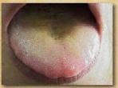
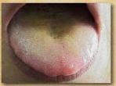

- 四肢重！排泄浊！大肚腩！浑身腻！
- 痰湿是人体内津液代谢失常停留于体内导致的病理产物。
- 痰湿形成之后，可随处停留，又可引起脏腑功能失常，导致疾病的发生。
- 脾主运化，外感湿邪，脾胃受阻，水湿内停，凝聚为痰湿。
- 痰湿质的形成于生活方式关系最为密切，多发于生活富足的人。

根据您的体质辨识结果，建议您从痰湿质调理，因为脾气虚弱，导致脾运化水液功能减弱，过多水液停留体内，形成痰湿和水肿，中医有“百病多由痰作祟”的说法。祛湿首先要健脾，再配合生活方式的改变从而改善体质偏颇。
 
